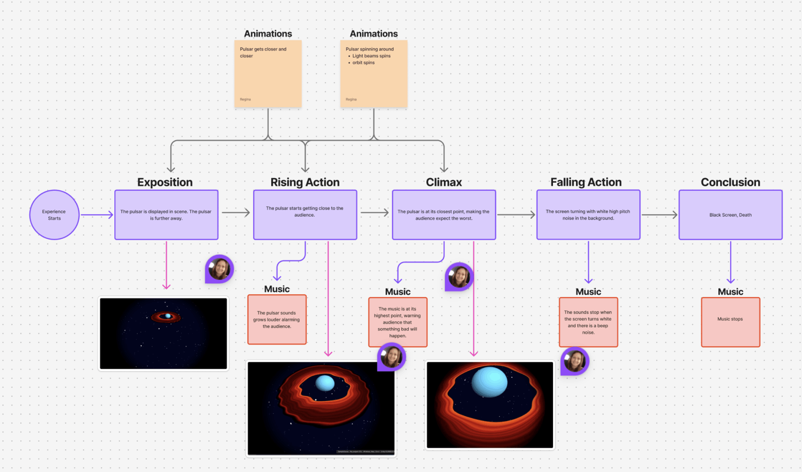

The Philip and Patricia Frost Museum of Science is developing a new interactive exhibition titled “How to Die in Space,” a choose‑your‑own‑adventure experience inspired by astrophysicist Paul M. Sutter’s book of the same name. In this show, visitors make decisions that determine whether they survive or meet a dramatic cosmic end, learning about astrophysical dangers along the way.
As part of this project, we were invited to design a dedicated scene in which a pulsar gradually approaches the audience, ultimately “killing” them in a playful, educational way. Our task was to translate this concept into an immersive full‑dome animation that supports the show’s interactive narrative and enhances the visitor experience.
How do we simulate the experience of being “killed” by a pulsar in a way that feels thrilling, educational, and appropriate for a general audience? The challenge was to convey danger without graphic content, relying instead on spatial storytelling and visual cues that work within a full‑dome environment.
We used perspective, scale, and spatial positioning to create a sense of escalating tension. By placing the pulsar at varying distances within the dome, we simulated the feeling of being pulled closer to a hazardous astrophysical object. As the pulsar appeared larger and more dominant in the viewer’s field of vision, the experience naturally communicated danger, allowing us to “kill” the audience in a playful, non‑literal way through immersive visual design.
Young learners who benefit from visually engaging, easy to udnerstand explanations of space phenomena.
Visitors with a strong interest in astronomy who appreciate scientifically grounded visualizations.
Guests seeking an entertaining and educational experience during their visit to the Frost Museum.
School groups and teachers looking for interactive ways to explore astrophysics concepts.
Our experience stands out because of its audience‑driven interactivity. Visitors make choices that directly shape the pacing and direction of the show, creating a sense of agency and suspense. This branching structure transforms a traditional planetarium program into an interactive narrative where the audience unknowingly decides whether they will survive or be “killed” by a pulsar. Their decisions become the engine of the experience.
Compared to Frost’s Black Hole Show and other classic planetarium experiences, our project introduces a more dynamic, choice‑based format. Instead of passively watching, visitors actively participate, making the show more memorable, engaging, and educational.
A visual walkthrough of each user's journey.

My Role:
The first image displays the first iteration of the pulsar, followed by the updated version.
The audience engages with the exhibition by choosing which path they want to explore, unknowingly deciding whether they will survive or be “killed” by a pulsar. This branching interaction creates a playful sense of suspense while encouraging visitors to think critically about astrophysical phenomena.
Our goal is to design a realistic, immersive, and accessible experience that invites curiosity and allows visitors of all ages to enjoy learning about space through interactive storytelling and scientific visualization.
We received feedback on our animation from both the museum team and the university reviewers. As the project shifted away from direct dome integration and toward becoming a dynamic welcome animation, we were encouraged to reintroduce the galaxy‑style background to create a stronger sense of immersion. We were also advised to develop a text component so the animation could display the show’s title and greet guests as they entered the planetarium.
Additionally, reviewers recommended adding a second animation featuring another space phenomenon to provide visual variety. In response, we chose to design a complementary planet animation, which paired naturally with the pulsar scene and supported the show’s astrophysical theme.